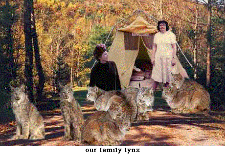
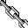

Links
![[floral bar]](../graphics/3bar.gif)

This page is for you to find other places you may want to
visit on the web. In particular, it's for finding home pages for other family
members, and genealogy pages for related families. Let us know if you want
us to include yours--but no commercial sites, please. And put a link to
mckague.com on your page.
We also have a second page with some sites of more general interest, genealogical and otherwise.
FAMILY HOME PAGES
Eric McKague
Menya Wolfe's Memorial Page
Menya's Banners (a unique memorial)
Pete Bevin
Logan Spagnolo's Baby Pictures
RELATED FAMILIES
Andrew Moran's Family.
The Black Family
The Brunner Family
The Calkins Family.
The Curtis and Spencer Families
The Dunnill Family
The Drynan Family
The Gunter and Hennessy Families.
The Webster/Hazelton Family
The McIndoo Family
The McKague Family (James and Mary (Stamper) McKague)
The McKeag Family (all spellings)
The McKeague Family. These folks originate in the same community in County Cavan as our Cavan McKagues, and we hope that eventually we'll establish a link.
The Paxman Family
The Van Blaricum Family
The Van Will Family
CRAMAHE TOWNSHIP LINKS
Early Colborne Families (especially the Keelers)
Colborne Community Website
More Links
![[link to mckague.com]](../graphics/m.GIF) Back to mckague.com
Back to mckague.com
mckague.com Search our Site Our Genealogy Page Our Photographs Links Pure Gold Guestbook Credits